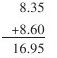

小数加减法教学案例与反思 [1]
老师：同学们，今年国家实行了“两免一补”，我们班一部分生活困难的同学已领到了新书，他们再不为交不起杂费，买不起书发愁了。那么，这些新书的价钱分别是多少呢？请同学们统计一下，然后同桌进行交流，相互检查一下统计的对不对，统计的全不全。
学生各自投入到统计活动之中。
老师：谁来汇报一下你的统计结果。
学生1：我统计的结果是：语文书8.35元、数学书8.60元、艺术书9.00元、英语书4.30元、科学书5.45元、阅读7.50元、数学练习册5.00元、写字本3.00元。
学生2：数学练习册、写字本不是免费的，不应统计。
老师：同学们统计的都很认真，大部分都按要求统计了。下面请同学们先各选两本书算一算价钱是多少，然后在四人小组内交流你们的计算方法和计算结果。
师参与小组活动之中，也进行计算、进行交流。
老师：请各组汇报一下你们的计算情况。
组1：我们组是这样算的：
一是英语书和科学书一共有多少元？算式是：4.30+5.45=9.75，方法是口算，4元3角加5元4角5分就是9元7角5分，也就是9.75元。
二是语文书和数学书一共多少元？算式是：8.38+8.60=16.95（元）这是用竖式计算的。竖式是这样的：
板书

老师：计算时，你们为什么要把小数点对齐？
学生：因为元和元相加、角和角相加、分和分相加才对。
老师：你总结得很好，这实际就是相同单位的数才能相加。下面请同学们用自己喜欢的方式选做下列各题，最少做两题，做的快的可以全部做完，做完后同桌交流一下，看做的对不对。
0.9+0.6
7.29+1.71
15.4+1.71
5.94+10.70
老师：刚才同学们计算了两本书一共有多少钱，下面能不能试做一下两本书相差多少钱呢？
学生选做两本书相差多少元。
老师：在计算小数减法时，你们为什么也要把小数点对齐？
学生：因为做加法时，相同单位的数才能相加，做减法时我想也应该这样，所以要把小数点对齐再相减。
老师：请同学们试做下列各题，看谁做的又对又多。
15-12.57
10.2-8.75
11.65-7.39
10-3.14
全班反馈交流。
老师：计算小数加减法时要注意什么？
学生：小数点对齐后再加减。
老师：请同学们放学回到家算一算你和爸爸或者妈妈的身高相差多少好吗？
教学反思：
我任四年级两个班的数学教学。在一班上课的时候，按我的预设出现的问题较多，最突出的是：（1）教材中创设的情境学生不感兴趣。（2）学生对教材中提出的问题，好像无所适从，不能采用有效的解题策略。因此，致使课堂教学效果很不理想。下课后，我认真进行了反思，分析了许多原因，但最主要的还是教材中所创设的情境与农村学生的知识背景差距太大，他们中的很多人根本就不理解“综合素质得分”、“专业得分”等，这样只能是被动地接受知识。在二班上课的时候，我重新调整了教学方案，这节课我感受颇深，主要有这样几个方面。
一、把学生经历的事当作宝贵的资源引入课堂
国家实行“两免一补”后，部分贫困家庭学生得到的实惠，虽然课堂上仅要求计算两本书的价钱，但留给学生学习的空间很大（也可以计算更多本书的价钱，还可以计算全部书的价钱），让学生切实感受到党和人民政府对贫困生的关爱。另外，我又让学生计算两本书相差多少钱，用现有的数据，解决自己身边的数学问题，既学习了新知识，又让学生感受到数学就在自己的身边，学了数学就能解决身边的数学问题，增强了学生应用数学知识的意识，这样一举几得。
二、把学习的主动权交给学生，让学生探究小数加减的方法
根据学生已有的知识积累，这节课无论是计算小数加还是小数减，问题情境创设后，放心让学生自主探索计算的方法。教师始终抓住小数加或减“为什么要把小数点对齐”这个问题，让学生说算理、说方法，教师适时给以引导，这样就把学生推向了学习的主动地位，让学生充分经历学习的过程，主动获取知识。
三、有目的地进行小组合作学习，给学生营造人人参与数学活动的空间
有效的课堂教学必须在互动中进行，无论是同桌互动、小组互动还是师生互动，目的就是给学生创设宽松的学习环境，营造人人参与数学活动的空间。让学生人人动手、动口、动脑，全身心投入到数学活动之中，教师通过对学习困难的学生适时给以指导，这样就使每个学生都有学习知识的成就感，有效地提高课堂教学效率。
四、对练习进行了弹性要求，满足不同学生的学习需求
在练习的处理上，我让学生选做，并且还把练习延伸到课外，这样就充分体现了课改新理念——不同的学生学习不同水平的数学，满足了每个学生的需求。